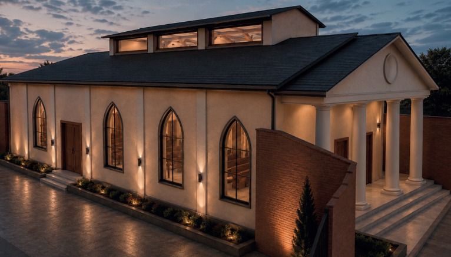
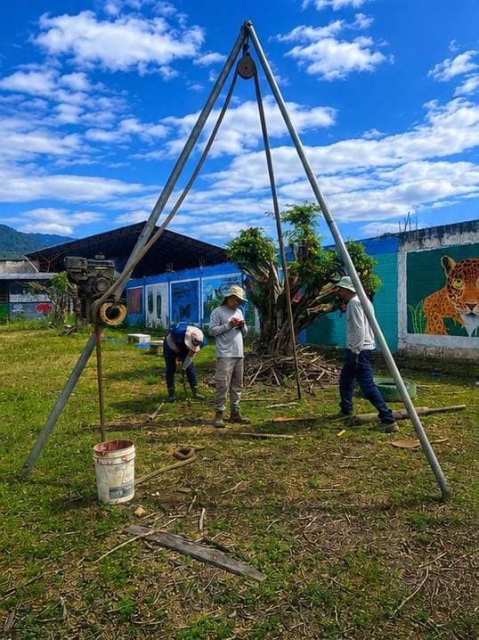
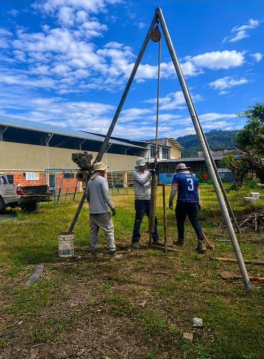

AUDITORIO UEFRU
DISEÑO + CONSTRUCCIÓN
Un espacio para
reunir y compartir.


El Auditorio UEFRU fue concebido como un espacio institucional destinado al encuentro, la reunión y el desarrollo de distintas actividades.
La propuesta trabaja una imagen arquitectónica de carácter representativo, combinando una volumetría definida con una composición de materiales y elementos que refuerzan su identidad.
Un proyecto desarrollado integralmente desde el diseño hasta su construcción, cuidando la funcionalidad, la presencia arquitectónica y cada detalle de su ejecución.